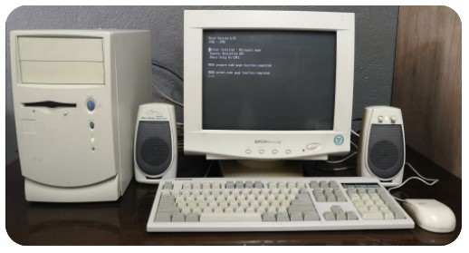
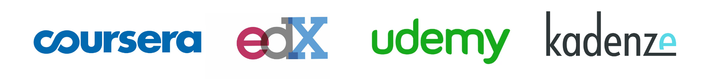
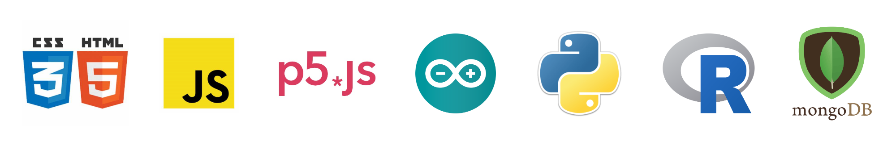

About Me.
Here is a bit about my story.
It all began one day in 1995 when I arrived home from school to find my father sitting behind this beige box. He excitedly calls me over, loads up a game called DOOM, puts it in 'nightmare mode' and announces "Good luck!" as he runs away giggling. I'm hooked - not just by the game, but the sheer magic of this amazing machine. We spend the following years bonding over this alien technology. Advances in hardware, software and then of course the internet never ceases in it's ability to amaze me and it becomes the focus of my interests.
My first PC - Intels 486DX-100. This was the bleeding edge technology in the mid 90's!
After high school I complete a Cert 4 in Design Fundamentals and then enter a Bachelors in Digital Design, which opens my eyes to how computation will create up a new era of how we go about our way of life. Sound production, film and television, and print are my areas of focus - and during my second year of study I am offered a job working for a company that designs and prints for the likes of Billabong, Rip Curl and Morrison Media. I fall in love with the print machinery and am placed in charge of overseeing the digital print operations.
After some years, I find myself working as a freelance artist, affording me the opportunity to work from home. But just working in design is not captivating me - I need to be around hardware. So I broaden my knowledge in other areas: Security and Broadcasting Technologies.
I then start to become aware of something; where my knowledge in computational technologies has grown, for many others it hasn't even started. Particularly the generations before me. I see it that if I am the one to identify a problem, then it is my responsibility to find a solution for it. So I begin to go back into a freelance / consultant role where I offer my expertise towards locally run businesses that are struggling to compete with the giants. I not only guide them towards finding ways in using technology to stay in business but also teach them how to understand it themselves and stay ahead of the curve.
Then I read a book called "A New Kind Of Science" by Stephen Wolfram. It changes the way I see the world by introducing me to Emergence and Complexity Theory. I immediatley know that I need to learn how to program. My first program is done without using a computer - by running simple rules and marking graph paper. It's at this point I acknowledged that I needed to upgrade my skillset and learn to code.
My first program, Wolfram's Rule 30 Cellular Automata, completed by hand.
I had also recognised around this time that there is something more happening aside from this push into the digital paradigm - that we as humans have started to undergo a transition to something greater. The rise of artificial intelligence has pushed us into a new era where we are asking some very interesting questions about ourselves. So I decide to embark on a new journey to better understand where we are heading and return to my home a Griffith University, to study yet another emerging area - Intelligent Digital Technologies, where I get a taste of engineering, computer science and IT. This is where I find myself today, with the goal to be the creative, fun and caring character that this industry needs at it's core.
Since returning I have been an active participant of workshops hosted at university. Taking part in Griffith MATE Bystander program - teaching leadership and positive bystander actions that create an environment where everyone feels safe and respected, the Intercultural Communication program where we developed significant tools towards being culturally astute to be able to thrive in a global work environment and Science PLUS, a professional learning program designed towards the personal and professional development of skills required for success in industries related to science, technology engineering and mathematics.
Extra-curricular studies.
Taking the initiative to learn.
Being an autonomous learner, I have taken the initiative to further develop my skills and understandings of other industries that can hugely benefit from modern emerging technologies. This has required me to display a high level of organizational and prioritization skills to be successful, and resulted in a deep intrinsic fulfillment. You can view my credentials below:
Completed Online Studies:
Fundamentals of NeuroscienceView Certificate
Introduction to PsychologyView Certificate
The Nature of CodeView Certificate
The Mind and Artificial IntelligenceView Certificate
Software and Programming.
Proficient across a wide range of technologies.
In addition to basic computer software applications such as Microsoft Word, Excel and Powerpoint and my history using design applications including Adobe Photoshop, Illustrator and XD, I have developed proficiency in the programming languages shown above; HTML, CSS, Javascript, P5.js, C, C++, Python, R and MongoDB.
© Copyright 2022 Jason O'Grady